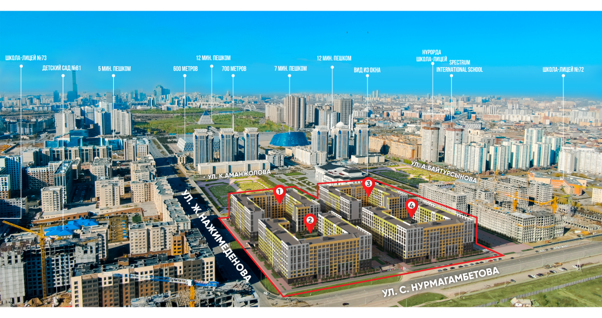

О комплексе
«Grand Victoria» — это современный, стильный и яркий жилой комплекс, сочетающий в себе комфорт, функциональность и красоту. Высокий уровень жизни в ЖК «Grand Victoria» обеспечивается за счёт качества строительства, продуманных архитектурных решений, транспортной доступности и развитой инфраструктуры. Объект возводится в престижном и уютном микрорайоне столицы, на пересечении улиц С. Нурмагамбетова и Ж. Нажимеденова, в непосредственной близости к значимым культурным объектам Нур-Султана. Рядом находятся мечеть «Хазрет Султан», Национальный музей Республики Казахстан, Дворец творчества «Шабыт», Казахский Государственный академический музыкально-драматический театр им. К. Куанышбаева, монумент «Қазақ Елі». В шаговой доступности несколько государственных и частных школ и детских садов
4 дома
9 этажей
1040 квартир
2022 г. cдача в эксплуатацию
Преимущества
Локация
Жилой комплекс «Grand Victoria» расположен в самом сердце культурной жизни столицы. Не нужно далеко ехать, чтобы посетить мечеть, театр, музей или концертный зал – всё это в шаговой доступности.

Разумные метры
При проектировании квартир ЖК «Grand Victoria» использовался принцип «Разумные метры», который позволил эффективно использовать каждый квадратный метр площади. Все планировки функциональны - нет слишком длинных коридоров, тупиков и тёмных углов. Рациональные, эргономичные и продуманные планировки позволят функционально разместить мебель и сделать пространство комфортным

Технология строительства
Проект возводится по уникальному методу индустриального строительства. Все изделия выпускаются в заводских условиях - ровные стены, готовые под оклейку обоями или покраску с проведеннымии каналами для электропроводки, трехслойные наружные фасады, отвечающие всем стандартам качества, безопасности и архитектурной эстетики. Учитывая климатические условия столицы от -40 до +40 ⁰С, изделия обладают повышенной энергоэффективностью и влагонепроницаемостью.

Паркинг
Подземный паркинг с автоматизированным контролем доступа. Он оборудован системами видеонаблюдения, вентиляции и дымоудаления. Подземный паркинг рассчитан на 358 машиномест. Также имеются специальные парковочные места для водителей с ограниченными возможностями. Предусмотрено также 16 мотомест. Есть отдельная парковка для гостевых автомобилей.

Идеальные планировки
В проекте предусмотрены квартиры различной комнатности от 44 до 117 квадратных метров. Компактные однушки станут отличным вариантом для тех, кто ещё не обзавёлся семьёй. Функциональные двухкомнатные квартиры подойдут молодым парам, а для семей с детьми запроектированы просторные трёхкомнатные и четырёхкомнатные квартиры с большими площадями

Стильные решения
Входные группы, лифтовые зоны, колясочные и другие общественные пространства комплекса не только функциональны, но и выполнены в современном стиле. Перед лифтами предусмотрены указатели этажей, а также информационные стенды, для того, что бы быть в курсе жизни комплекса.

Келлеры
Для оптимизации пространства квартир в паркинге предусмотрены помещения для хранения - келлеры. Келлерная система хранения популярна в Европе. Не нужно хранить межсезонные вещи, спортинвентарь, инструменты, туристические принадлежности на балконе или в доме. В келлерах можно организовать постоянное или временное хранение вещей.
Инфраструктура
Расположение
Все продумано
Безопасный двор
Жилой комплекс «Grand Victoria» расположен в самом сердце культурной жизни столицы. Не нужно далеко ехать, чтобы посетить мечеть, театр, музей, концертный зал или знаковый городской монумент – всё это в шаговой доступности. Лучшие достопримечательности Нур-Султана можно видеть каждый день, устраивая неспешные прогулки.